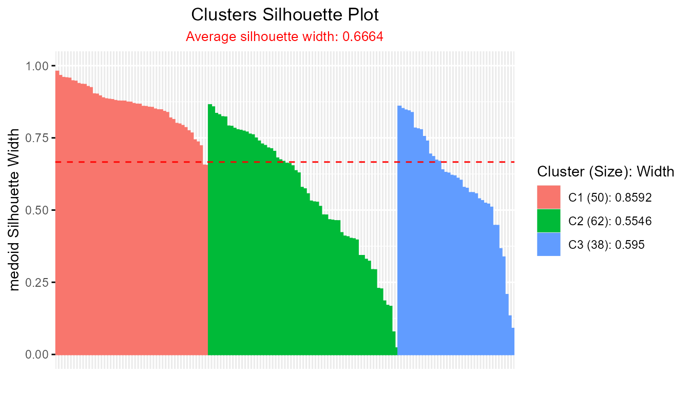
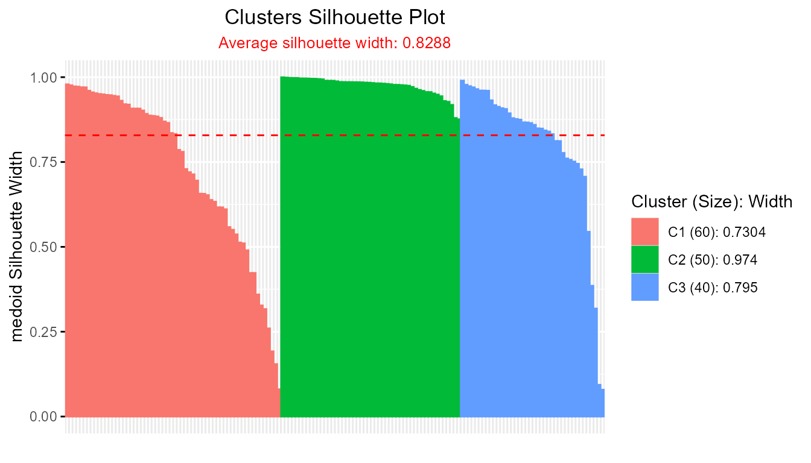
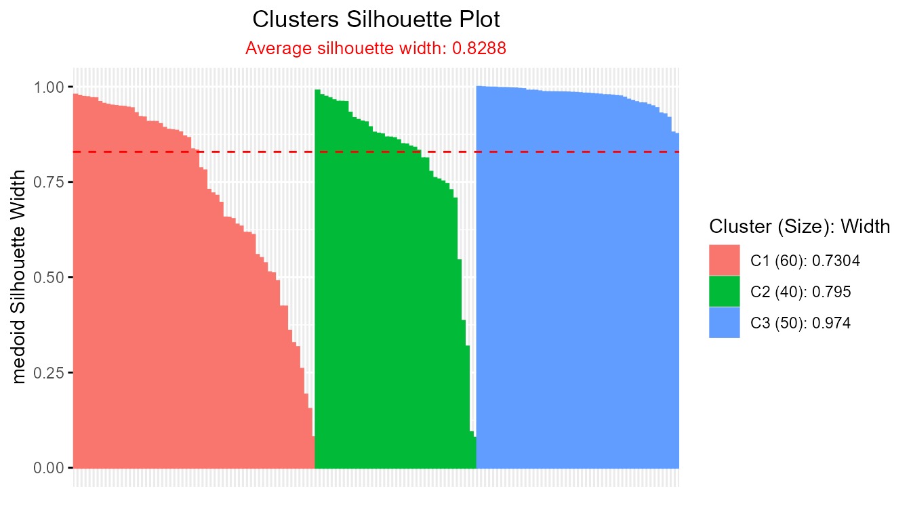
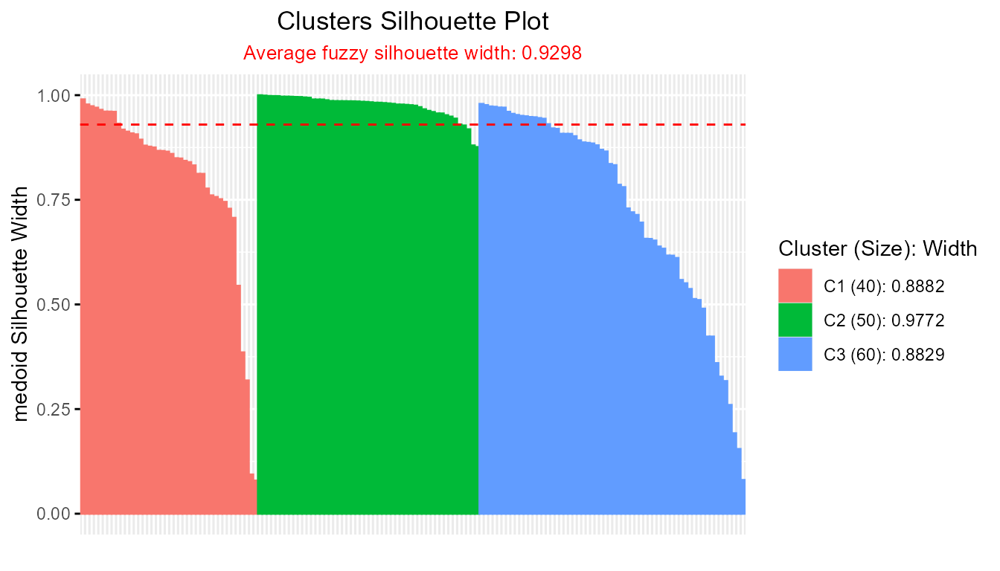
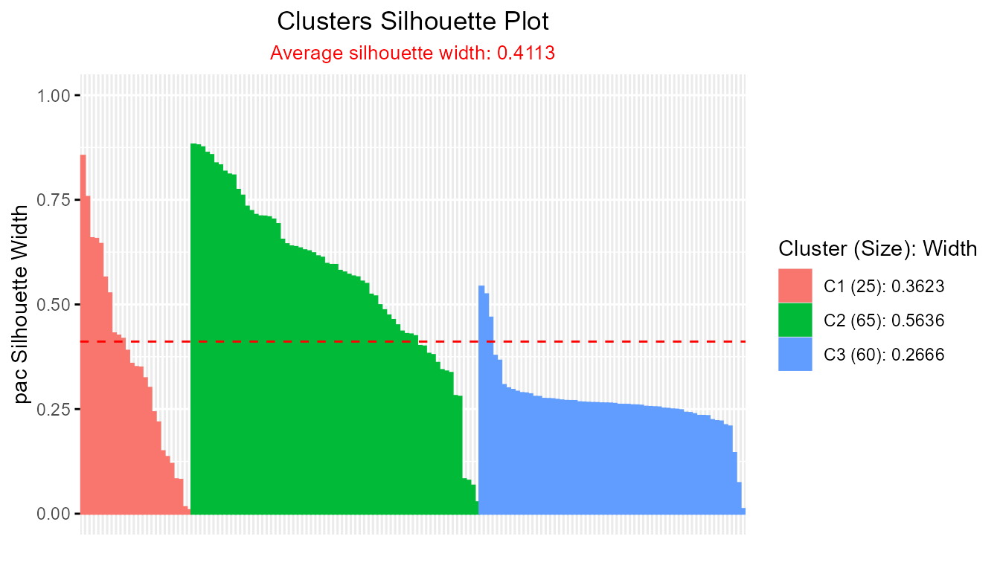
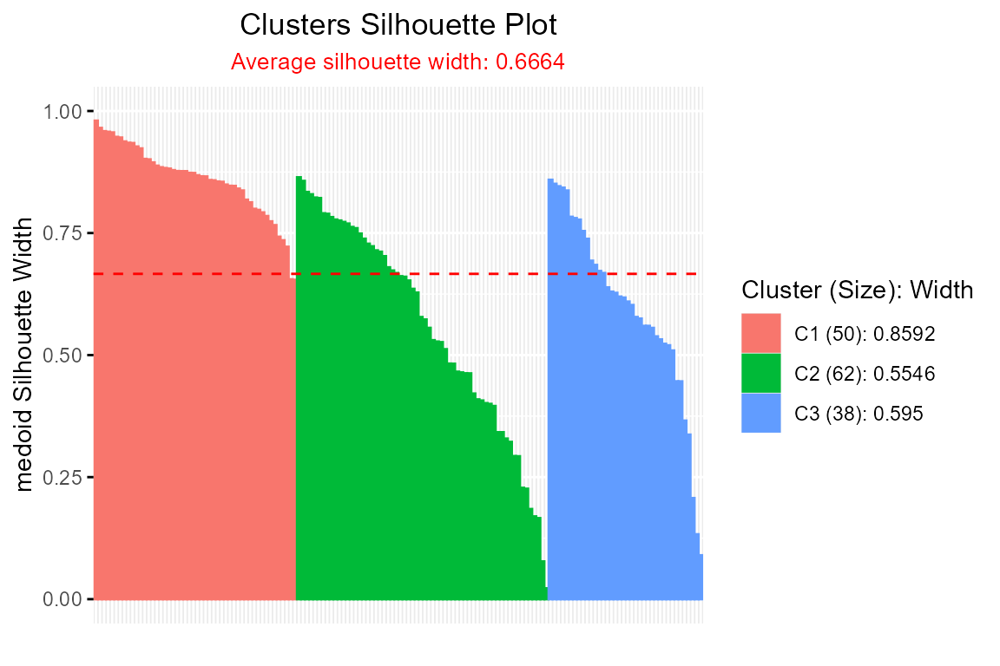
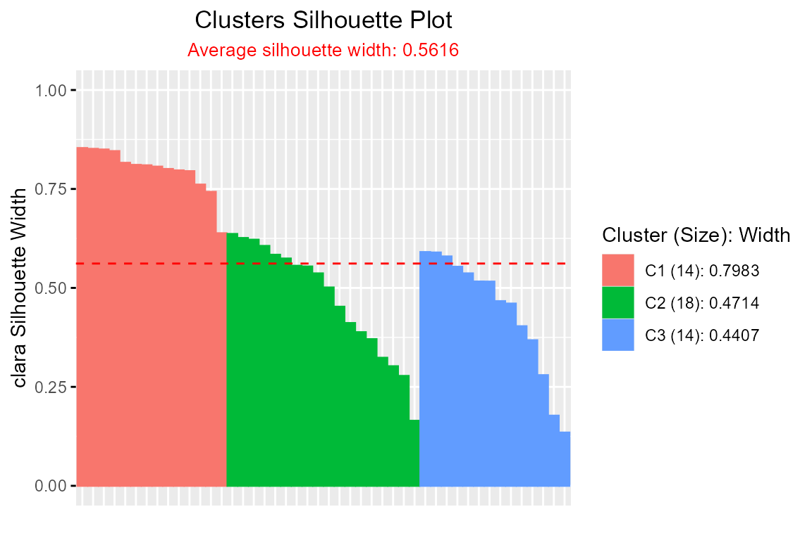
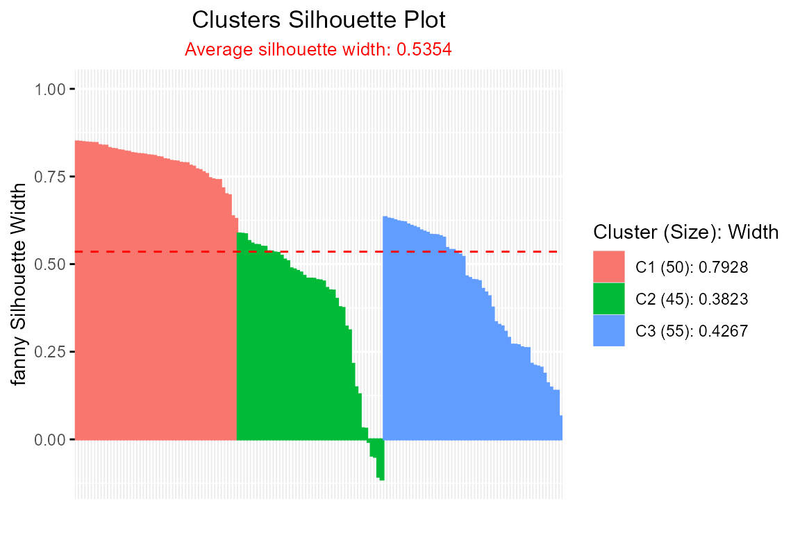
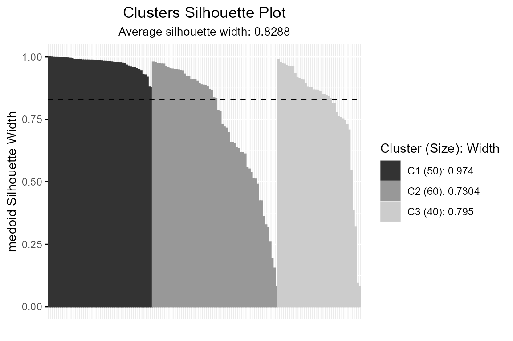
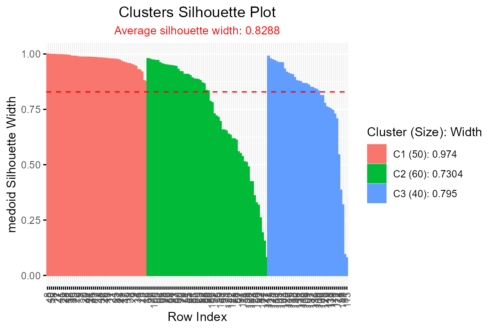

Silhouette Package
Silhouette.RmdIntroduction
The Silhouette package provides a comprehensive and
extensible framework for computing and visualizing silhouette widths to
assess clustering quality in both crisp (hard) and
soft (fuzzy/probabilistic) clustering settings.
Silhouette width, originally introduced by Rousseeuw (1987), quantifies how similar an
observation is to its assigned cluster relative to the closest
alternative cluster. Scores range from -1 (indicative of poor
clustering) to 1 (excellent separation).
Note: This package does not use the classical Rousseeuw (1987) calculation directly. Instead, it generalizes and extends silhouette methodology as follows:
- Implements the Simplified Silhouette method (Van der Laan, Pollard, and Bryan 2003), with
options for
medoidorpac(Probability of Alternative Cluster, Raymaekers and Rousseeuw (2022)) approaches. - Provides soft clustering silhouettes based on membership probabilities (Campello and Hruschka 2006; Bhat Kapu and Kiruthika 2024).
- Supports multi-way clustering evaluation via
extSilhouette()(Schepers, Ceulemans, and Van Mechelen 2008), enabling silhouette analysis for biclustering or higher-order tensor clustering. - Offers customizable and informative visualization with
plotSilhouette(), including grayscale options and detailed cluster legends. The package also integrates with clustering results from popular R packages such ascluster(silhouette,pam,clara,fanny) andfactoextra(eclust,hcut).
This vignette demonstrates the essential features of the package
using the well-known iris dataset. It showcases both
standard (crisp) and fuzzy silhouette calculations, advanced plotting
capabilities, and extended silhouette metrics for multi-way clustering
scenarios.
Available Functions
-
Silhouette(): Calculates silhouette widths for both crisp and fuzzy clustering, using user-supplied proximity matrices. -
plot()/plotSilhouette(): Visualizes silhouette widths as sorted bar plots, offering grayscale and flexible legend options for clarity. -
summary(): Produces concise summaries of average silhouette widths and cluster sizes for objects of classSilhouette. -
softSilhouette(): Computes silhouette widths tailored to soft clustering by interpreting membership probabilities as proximities. -
extSilhouette(): Derives extended silhouette widths for multi-way clustering problems, such as biclustering or tensor clustering.
Use Cases
1. Simplified Silhouette Calculation
a. When the Proximity Matrix is Unknown but Centers of Clusters Are Known
This example demonstrates how to compute silhouette widths for a
clustering result when you have the proximity (distance) matrix between
observations and cluster centres unknown. The workflow uses the classic
iris dataset and k-means clustering.
Steps:
-
Clustering: Perform k-means clustering on
iris[, -5]with 3 clusters.
Note: The kmeans output (km) does
not include a proximity matrix. Therefore, distances between
observations and cluster centroids must be computed separately.
-
Compute the Proximity Matrix:
Create a matrix of distances between each observation and cluster centroid usingproxy::dist().
library(proxy)
dist_matrix <- proxy::dist(iris[, -5], km$centers)
sil <- Silhouette(dist_matrix)
#> -----------------------------------------------
#> Average dissimilarity medoid silhouette: 0.6664
#> -----------------------------------------------
#> cluster size avg.sil.width
#> 1 1 50 0.8592
#> 2 2 62 0.5546
#> 3 3 38 0.5950
#>
#> Available attributes:
#> [1] "names" "class" "row.names" "proximity_type"
#> [5] "method"
head(sil)
#> cluster neighbor sil_width
#> 1 1 2 0.9586603
#> 2 1 2 0.8682865
#> 3 1 2 0.8831417
#> 4 1 2 0.8465006
#> 5 1 2 0.9455979
#> 6 1 2 0.7848442
plot(sil)
-
Customize Calculation:
To use the Probability of Alternative Cluster (PAC) method (which is more penalised variation of medoid method) and return a sorted output:
sil_pac <- Silhouette(dist_matrix, method = "pac", sort = TRUE)
#> --------------------------------------------
#> Average dissimilarity pac silhouette: 0.5376
#> --------------------------------------------
#> cluster size avg.sil.width
#> 1 1 50 0.7603
#> 2 2 62 0.4136
#> 3 3 38 0.4468
#>
#> Available attributes:
#> [1] "names" "row.names" "class" "proximity_type"
#> [5] "method"
head(sil_pac)
#> cluster neighbor sil_width
#> 8 1 2 0.9611009
#> 40 1 2 0.9329754
#> 1 1 2 0.9206029
#> 18 1 2 0.9182947
#> 50 1 2 0.9158517
#> 41 1 2 0.8993130
plot(sil_pac)-
Accessing Silhouette Summaries:
TheSilhouettefunction prints overall and cluster-wise silhouette indices to the R console by default, but these values are not directly stored in the returned object. To extract them programmatically, use thesummary()function:
s <- summary(sil_pac)
#> --------------------------------------------
#> Average dissimilarity pac silhouette: 0.5376
#> --------------------------------------------
#> cluster size avg.sil.width
#> 1 1 50 0.7603
#> 2 2 62 0.4136
#> 3 3 38 0.4468
# summary table
s$sil.sum
#> cluster size avg.sil.width
#> 1 1 50 0.7603
#> 2 2 62 0.4136
#> 3 3 38 0.4468
# cluster wise silhouette widths
s$clus.avg.widths
#> 1 2 3
#> 0.7602929 0.4136203 0.4468368
# Overall average silhouette width
s$avg.width
#> [1] 0.5375927b. When the Proximity Matrix Is Known
This section describes how to compute silhouette widths when the
proximity matrix—representing distances between
observations and cluster centers—is readily available as part of the
clustering model output. The example makes use of fuzzy c-means
clustering via the ppclust package and the classic
iris dataset.
Steps:
-
Step 1: Perform Fuzzy C-Means Clustering
Apply fuzzy c-means clustering oniris[, -5]to create three clusters.
-
Step 2: Compute Silhouette Widths Using the Proximity
Matrix
The output objectfmcontains a distance matrixfm$drepresenting proximities between each observation and each cluster center, which can be directly fed to theSilhouette()function.
sil_fm <- Silhouette(fm$d)
#> -----------------------------------------------
#> Average dissimilarity medoid silhouette: 0.8288
#> -----------------------------------------------
#> cluster size avg.sil.width
#> 1 1 60 0.7304
#> 2 2 50 0.9740
#> 3 3 40 0.7950
#>
#> Available attributes:
#> [1] "names" "class" "row.names" "proximity_type"
#> [5] "method"
plot(sil_fm)
- Alternative: Directly Use the Clustering Function with
clust_fun
To streamline the workflow, you can let the Silhouette()
function internally handle both clustering and silhouette calculation by
supplying the name of the distance matrix ("d") and the
desired clustering function:
sil_fcm <- Silhouette(prox_matrix = "d", clust_fun = fcm, x = iris[, -5], centers = 3)
#> -----------------------------------------------
#> Average dissimilarity medoid silhouette: 0.8288
#> -----------------------------------------------
#> cluster size avg.sil.width
#> 1 1 60 0.7304
#> 2 2 40 0.7950
#> 3 3 50 0.9740
#>
#> Available attributes:
#> [1] "names" "class" "row.names" "proximity_type"
#> [5] "method"
plot(sil_fcm) This approach eliminates the explicit step of extracting the proximity matrix, making analyses more concise.
Summary:
When the proximity matrix is provided directly by a clustering algorithm
(as with fuzzy c-means), silhouette widths can be calculated in one
step. For further convenience, the Silhouette() function
accepts both the proximity matrix and a clustering function, so that a
single command completes the clustering and computes silhouettes. This
greatly simplifies the process for methods with built-in proximity
outputs, supporting rapid and reproducible evaluation of clustering
separation and quality.
c. Calculation of Fuzzy Silhouette Index for Soft Clustering Algorithms
This section explains how to compute the fuzzy silhouette index when
both the proximity matrix (distances from observations
to cluster centers) and the membership probability
matrix are available. The process is demonstrated with fuzzy
c-means clustering from the ppclust package applied to the
classic iris dataset.
Steps:
-
Step 1: Perform Fuzzy C-Means Clustering
Apply fuzzy c-means clustering to the feature columns of theirisdataset, specifying three clusters:
-
Step 2: Compute Fuzzy Silhouette Widths Using Proximity and
Membership Matrices
The clustering outputfm1contains both the distance matrix (fm1$d) and the membership probability matrix (fm1$u). These can be directly passed to theSilhouette()function to compute fuzzy silhouette widths:
sil_fm1 <- Silhouette(prox_matrix = fm1$d, prob_matrix = fm1$u)
#> -----------------------------------------------------
#> Average fuzzy dissimilarity medoid silhouette: 0.9298
#> -----------------------------------------------------
#> cluster size avg.sil.width
#> 1 1 60 0.8829
#> 2 2 50 0.9772
#> 3 3 40 0.8882
#>
#> Available attributes:
#> [1] "names" "class" "row.names" "proximity_type"
#> [5] "method"
plot(sil_fm1)
- Alternative: Use Clustering Function Inline with
clust_fun
For an even more streamlined workflow, the Silhouette()
function can internally manage clustering and silhouette calculations by
accepting the names of the distance and probability components
("d" and "u") along with the clustering
function:
sil_fcm1 <- Silhouette(prox_matrix = "d", prob_matrix = "u", clust_fun = fcm, x = iris[, -5], centers = 3)
#> -----------------------------------------------------
#> Average fuzzy dissimilarity medoid silhouette: 0.9298
#> -----------------------------------------------------
#> cluster size avg.sil.width
#> 1 1 40 0.8882
#> 2 2 50 0.9772
#> 3 3 60 0.8829
#>
#> Available attributes:
#> [1] "names" "class" "row.names" "proximity_type"
#> [5] "method"
plot(sil_fcm1)
This approach removes the need to manually extract matrices from the clustering result, improving code efficiency and reproducibility.
Summary:
When both the proximity and membership probability matrices are directly
available from a clustering algorithm (such as fuzzy c-means), fuzzy
silhouette widths can be calculated efficiently in a single step. The
Silhouette() function further supports an integrated
workflow by running both the clustering and silhouette calculations
internally when provided with the relevant function and argument names.
This functionality facilitates a concise, reproducible pipeline for
validating the quality and separation of soft clustering results.
2. Comparing Two Soft Clustering Algorithms Using the Soft Silhouette Function
It is often desirable to assess and compare the clustering quality of different soft clustering algorithms on the same dataset. The soft silhouette index offers a principled, internal measure for this purpose, as it naturally incorporates the probabilistic nature of soft clusters and provides a single value summarizing both cluster compactness and separation.
Example: Evaluating Fuzzy C-Means vs. an Alternative Soft Clustering Algorithm
Suppose we wish to compare the performance of two fuzzy clustering
algorithms—such as Fuzzy C-Means (FCM) and a variant (e.g., FCM2)—using
the softSilhouette() function.
Steps:
-
Step 1: Perform Clustering with Both Algorithms
Fit each soft clustering algorithm on your dataset (e.g.,
iris[, 1:4]):
data(iris)
# FCM clustering
fcm_result <- ppclust::fcm(iris[, 1:4], 3)
# FCM2 clustering
fcm2_result <- ppclust::fcm2(iris[, 1:4], 3)-
Step 2: Compute Soft Silhouette Index for Each Result
Use the membership probability matrices produced by each algorithm:
# Soft silhouette for FCM
sil_fcm <- softSilhouette(prob_matrix = fcm_result$u)
#> -----------------------------------------
#> Average similarity pac silhouette: 0.7541
#> -----------------------------------------
#> cluster size avg.sil.width
#> 1 1 60 0.6261
#> 2 2 40 0.7005
#> 3 3 50 0.9507
#>
#> Available attributes:
#> [1] "names" "class" "row.names" "proximity_type"
#> [5] "method"
plot(sil_fcm)
# Soft silhouette for FCM2
sil_fcm2 <- softSilhouette(prob_matrix = fcm2_result$u)
#> -----------------------------------------
#> Average similarity pac silhouette: 0.4113
#> -----------------------------------------
#> cluster size avg.sil.width
#> 1 1 25 0.3623
#> 2 2 65 0.5636
#> 3 3 60 0.2666
#>
#> Available attributes:
#> [1] "names" "class" "row.names" "proximity_type"
#> [5] "method"
plot(sil_fcm2)
-
Step 3: Summarize and Compare Average Silhouette Widths
Extract the overall average silhouette width for each clustering result:
sfcm <- summary(sil_fcm, print.summary = FALSE)
sfcm2 <- summary(sil_fcm2, print.summary = FALSE)
cat("FCM average silhouette width:", sfcm$avg.width, "\n")
#> FCM average silhouette width: 0.7541271
cat("FCM2 average silhouette width:", sfcm2$avg.width, "\n")
#> FCM2 average silhouette width: 0.411275A higher average silhouette width indicates a clustering with more compact and well-separated clusters.
Interpretation & Guidance
- Interpret the Index: The algorithm yielding a higher average soft silhouette width is considered to produce a better clustering, as it balances cluster cohesion and separation while accounting for the uncertainty inherent in soft assignments.
- Practical Application: This method is generic; any two or more soft clustering results (not limited to FCM/FCM2) can be compared effectively, provided you can extract the membership probability matrix.
-
Flexible Integration: The
softSilhouette()function also allows for different silhouette calculation methods and transformations (such asprob_type = "nlpp"for negative log-probabilities), supporting deeper comparisons aligned with your methodological framework.
Summary:
Comparing the average soft silhouette widths from different soft
clustering algorithms provides an objective, data-driven basis for
determining which method produces more meaningful, well-defined clusters
in probabilistic settings. This approach harmonizes easily with both
classic fuzzy clustering and more advanced algorithms.
3. Scree Plot for Optimal Number of Clusters
The scree plot (also called the “elbow plot” or “reverse elbow plot”) is a practical tool for identifying the best number of clusters in unsupervised learning. Here, the silhouette width is calculated for different values of k (number of clusters). The resulting plot provides a visual indication of the optimal cluster count by highlighting where increasing k yields only marginal improvements in the average silhouette width.
Steps:
-
Step 1: Compute Average Silhouette Widths at Varying Cluster
Counts
Run silhouette analysis across a range of possible cluster numbers (e.g., 2 to 7). For each k, use theSilhouette()function to calculate the silhouette widths, then extract the average silhouette width from the summary.
data(iris)
avg_sil_width <- numeric(6)
for (k in 2:7) {
sil_out <- Silhouette(
prox_matrix = "d",
proximity_type = "dissimilarity",
prob_matrix = "u",
clust_fun = ppclust::fcm,
x = iris[, 1:4],
centers = k,
print.summary = FALSE,
sort = TRUE
)
avg_sil_width[k - 1] <- summary(sil_out, print.summary = FALSE)$avg.width
}-
Step 2: Create and Interpret the Scree Plot
Plot the number of clusters against the computed average silhouette widths:
plot(avg_sil_width,
type = "o",
ylab = "Overall Silhouette Width",
xlab = "Number of Clusters",
main = "Silhouette Scree Plot"
)The optimal number of clusters is often suggested by the “elbow” or “reverse elbow”—the point after which increases in k lead to diminishing or excessive improvements in silhouette width. This visual guide is valuable for assessing the clustering structure in your data.
Note: Both the Silhouette and softSilhouette functions can be used to generate scree plots for optimal cluster selection. For theoretical background and additional diagnostic options for soft clustering, see Bhat Kapu and Kiruthika (2024).
Summary:
The scree plot provides an intuitive graphical summary to assist in
choosing the optimal number of clusters by plotting average silhouette
width versus the number of clusters considered. The integrated use of
Silhouette(), softSilhouette(), use of
clust_fun and summary functions makes this analysis
straightforward and efficient for both crisp and fuzzy clustering
frameworks. This method encourages a reproducible, objective approach to
cluster selection in unsupervised analysis.
4. Visualizing Silhouette Analysis Results with
plotSilhouette()
Efficient visualization of silhouette widths is essential for
interpreting and diagnosing clustering quality. The
plotSilhouette() function provides a flexible and
extensible tool for plotting silhouette results from various clustering
algorithms, supporting both hard (crisp) and soft (fuzzy)
partitions.
Key Features: - Accepts outputs from a wide range of
clustering methods: Silhouette,
softSilhouette, as well as clustering objects from
cluster (pam, clara,
fanny, base silhouette) and
factoextra (eclust, hcut). -
Offers detailed legends summarizing average silhouette widths and
cluster sizes. - Supports customizable color palettes, including
grayscale, and the option to label observations on the x-axis.
Illustrative Use Cases and Code
- Crisp Silhouette Visualization (e.g., k-means clustering):
data(iris)
km_out <- kmeans(iris[, -5], 3)
dist_mat <- proxy::dist(iris[, -5], km_out$centers)
sil_obj <- Silhouette(dist_mat)
#> -----------------------------------------------
#> Average dissimilarity medoid silhouette: 0.6664
#> -----------------------------------------------
#> cluster size avg.sil.width
#> 1 1 50 0.8592
#> 2 2 62 0.5546
#> 3 3 38 0.5950
#>
#> Available attributes:
#> [1] "names" "class" "row.names" "proximity_type"
#> [5] "method"
plot(sil_obj) # S3 method auto-dispatch
plotSilhouette(sil_obj) # explicit call (identical output)
- Crisp Silhouette from Cluster Algorithms (PAM, CLARA, FANNY):
library(cluster)
pam_result <- pam(iris[, 1:4], k = 3)
plotSilhouette(pam_result) # for cluster::pam object
clara_result <- clara(iris[, 1:4], k = 3)
plotSilhouette(clara_result)
fanny_result <- fanny(iris[, 1:4], k = 3)
plotSilhouette(fanny_result)
- Base silhouette object:
sil_base <- silhouette(pam_result)
plotSilhouette(sil_base)- factoextra & hcut/eclust clusterings:
library(factoextra)
eclust_result <- eclust(iris[, 1:4], "kmeans", k = 3, graph = FALSE)
plotSilhouette(eclust_result)
hcut_result <- hcut(iris[, 1:4], k = 3)
plotSilhouette(hcut_result)
- Fuzzy (Soft) Silhouette Visualization (e.g., fuzzy c-means with ppclust):
data(iris)
fcm_out <- ppclust::fcm(iris[, 1:4], 3)
sil_fuzzy <- Silhouette(
prox_matrix = "d", prob_matrix = "u", clust_fun = fcm,
x = iris[, 1:4], centers = 3, sort = TRUE
)
#> -----------------------------------------------------
#> Average fuzzy dissimilarity medoid silhouette: 0.9298
#> -----------------------------------------------------
#> cluster size avg.sil.width
#> 1 1 60 0.8829
#> 2 2 40 0.8882
#> 3 3 50 0.9772
#>
#> Available attributes:
#> [1] "names" "row.names" "class" "proximity_type"
#> [5] "method"
plot(sil_fuzzy, summary.legend = FALSE, grayscale = TRUE)- Customization: Grayscale, Detailed Legends, and Observation Labels:
plotSilhouette(sil_fuzzy, grayscale = TRUE) # Use grayscale palette
plotSilhouette(sil_fuzzy, summary.legend = TRUE) # Include size + avg silhouette in legend
plotSilhouette(sil_fuzzy, label = TRUE) # Label bars with row index
Practical Guidance: - For clustering output classes
not supported by the generic plot() function, always use
plotSilhouette() explicitly to ensure correct and
informative visualization. - The function automatically sorts silhouette
widths within clusters, displays the average silhouette (dashed line),
and provides detailed cluster summaries in the legend.
Summary:plotSilhouette() brings unified, publication-ready
visualization capabilities for assessing crisp and fuzzy clustering at a
glance. Its broad compatibility, detailed legends, grayscale and
labeling options empower users to gain deeper insights into clustering
structure, facilitating clear diagnosis and reporting in both
exploratory and formal statistical workflows.
5. Extended Silhouette Analysis for Multi-Way Clustering
The extSilhouette() function enables silhouette-based
evaluation for multi-way clustering scenarios, such as biclustering or
tensor clustering, by aggregating silhouette indices from each mode
(e.g., rows, columns) into a single summary metric. This approach allows
you to rigorously assess the overall clustering structure when
partitioning data along multiple dimensions.
Workflow:
-
Step 1: Apply Multi-Way Clustering
Fit a biclustering algorithm to your data—in this example, we useblockcluster::coclusterContinuous()to jointly cluster the rows and columns of theirisdataset.
library(blockcluster)
data(iris)
result <- coclusterContinuous(as.matrix(iris[, -5]), nbcocluster = c(3, 2))
#> Co-Clustering successfully terminated!-
Step 2: Compute Silhouette Widths for Each
Mode
For each dimension (e.g., rows and columns), calculate silhouette widths using the membership probability matrices (result@rowposteriorprobfor rows,result@colposteriorprobfor columns) via thesoftSilhouette()function:
sil_mode1 <- softSilhouette(
prob_matrix = result@rowposteriorprob,
method = "pac",
print.summary = FALSE
)
sil_mode2 <- softSilhouette(
prob_matrix = result@colposteriorprob,
method = "pac",
print.summary = FALSE
)-
Step 3: Aggregate Silhouette Results with
extSilhouette()
Combine the silhouette analyses from each mode by passing them as a list toextSilhouette(). Optionally, provide descriptive dimension names:
ext_sil <- extSilhouette(
sil_list = list(sil_mode1, sil_mode2),
dim_names = c("Rows", "Columns")
)
#> ---------------------------
#> Extended silhouette: 0.6273
#> ---------------------------
#>
#> Dimension Summary:
#> dimension n_obs avg_sil_width
#> 1 Rows 150 0.6174
#> 2 Columns 4 1.0000
#>
#> Available components:
#> [1] "ext_sil_width" "dim_table"Summary:
The extSilhouette() function returns: - The overall
extended silhouette width—a weighted average summarizing clustering
quality across all modes. - A dimension statistics table, reporting the
number of observations and average silhouette width for each mode (e.g.,
rows, columns).
Note:
If a distance matrix is available from the output of a biclustering
algorithm, you can compute individual mode silhouettes using
Silhouette().
The results can be combined with extSilhouette() to
enable direct comparison of clustering solutions across multiple
biclustering algorithms, facilitating objective model assessment (Kapu and C 2025).
This methodology provides a concise and interpretable assessment for complex clustering models where conventional one-dimensional indices are insufficient.